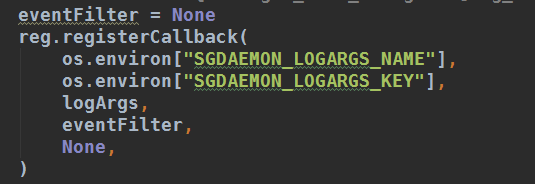
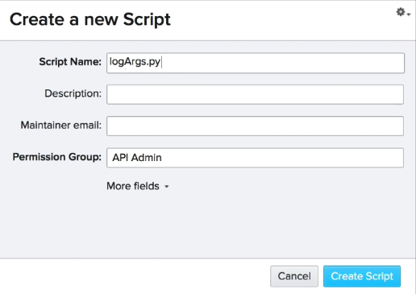
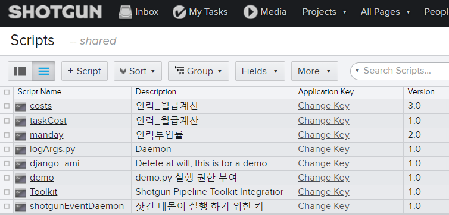

Logging Events (이벤트 로깅)
Now that our log our top UI plug-in is loaded. 이제 로그아웃 최상위 UI 플러그인이 로드되었습니다.
Let's pop it open and take a look. 그것을 펑 하고 열어 보자.
First I'll point out the two environment variables here. 먼저 두 가지 환경 변수를 짚어 보겠습니다.
They expect another script key. 또 다른 스크립트 키를 기대합니다.

Take a minute to grok the situation. 잠시 시간을 내어 상황을 파악하십시오.
The daemon itself means the script key so it can query shotgun for changes to the event log. 데몬 자체는 event log 변경 사항을 쿼리할 수 있도록 스크립트 키를 의미합니다.
But the individual plugins it fires off as a result of those events don't have to use the same script key. 하지만 개별 플러그인은 이러한 이벤트의 결과로 동일한 스크립트 키를 사용할 필요가 없습니다.
In fact it's important that each plug-in references its own script key. 실제로 각 플러그인은 자체 스크립트 키를 참조해야 합니다.
That way event log entries in shotgun can be attributed to specific plugins and bad actors can be a sidelined and debugged. 이러한 방식으로 샷건의 이벤트 로그 항목은 특정 플러그인에 기인할 수 있으며 불량 행위자는 제외되고 디버그될 수 있습니다.
Now I need to create the script key in shotgun. 이제 샷건 스크립트 키를 만들어야 겠어요.


Then export the environment variable in my shell. 그런 다음 환경 변수를 내 쉘로 내보냅니다.
setx /m SGDAEMON_LOGARGS_NAME "logArgs.py"
setx /m SGDAEMON_LOGARGS_KEY "#Onslgpcxmfop3kbsuvmioduf"
Cool. Let's make this easier to read. 좋아. 이걸 읽기 쉽게 하자.
import os
import logging
def registerCallbacks(reg):
eventFilter = None
reg.registerCallback(
os.environ["SGDAEMON_LOGARGS_NAME"],
os.environ["SGDAEMON_LOGARGS_KEY"],
logArgs,
eventFilter,
None,
)
reg.logger.setLevel(logging.DEBUG)
def logArgs(sg, logger, event, args):
logger.info("%s" % str(event))
For the demo I'll pair down the code by removing the comments. 데모에서는 주석을 제거하여 코드를 쌍으로 구성하겠습니다.
Okay. So what's going on here. 네, 무슨 일이 일어나고 있죠?
Well the daemon looks at all kite-line files in specified plug-in folders which as you remember we defined in our configuration file. 데몬은 지정된 플러그인 폴더에 있는 파일을 확인하는데, 이 플러그인은 우리가 config 파일에 정의한 것 입니다.
And if one of those files contains a register callbacks function like we've got here it will run that function.
그리고 만약 그 파일들 중 하나에 registerCallbacks(reg) 함수를 구현 했다면, 그 기능을 실행할 것입니다.
So what does that function do. 그래서 그 기능은 뭘까요?
Well its main purpose is to run the register callback method that lives in the reg object. 음, 그것의 주된 목적은 reg 목적지에 사는 콜백 기록 방법을 실행하는 것입니다.
Reg stands for Registrar ie the official thing that registers stuff with the daemon.
In our example here were passing in one a set of authentication credentials. Two, the name of a function. Three an event filter that's currently set to none And four optional additional arguments. 우리의 예를 들어, 4개의 변수를 사용 했습니다.
- 인증 자격 증명 집합(스크립트 키 이름, 키값)
- function 이름(플러그인 이름)
- 이벤트 필터(eventFilter = None)
- 마지막으로 추가 인수(선택 사항)입니다.
A little further down in the plugin you can see the log args function referenced in the register callback call. 플러그인에서 조금 더 아래쪽에 레지스터 콜백 호출에서 참조된 로그 args 기능이 표시됩니다.
So in essence this plugins register callbacks function is saying "Hey Damon. I've got this function called log args that prints out some stuff and I want you to run it with a specific set of authentication credentials whenever anything happens in Shotgun". 따라서 본질적으로 이 플러그인 레지스터 콜백 기능은 "야 데몬 내가 스크립트 키가 있는데 이 권한으로 샷건에서 무슨 일이 이어나고 있는지 로고로 남겨줘" 입니다.
And I mean anything because the event filter is none. And that's it. 이벤트 필터가 없기 때문에 그게 전부 입니다.
So, I'll check the terminal to make sure my plugin was reloaded and do something in shotgun to see what happens. 터미널을 확인하여 플러그가 다시 로드되었는지 확인하고 샷건에서 무슨 일이 일어나는지 알아보겠습니다.
There we go. 또 시작이군.
As an aside. Let's go check out our logs directory. 로그 디렉토리에 있는 로그 파일을 확인 해봅니다.
Remember this is the directory we specified in the config file. 이 디렉터리는 conf 파일에서 지정한 디렉터리입니다.
Here you can see that the daemon created to log files. 여기서 로그 파일을 위해 생성된 데몬을 볼 수 있습니다.
One for messages originating from our logArg's plugin and one for messages coming from the daemon. 하나는 logArg 플러그인에서 생성된 메시지와 다른 하나는 데몬에서 오는 메시지에 대한 것입니다.
In practice i rarely check these logs when using the daemon in foreground mode like we're doing now but later when we launch the daemon in start mode these logs will be the only place messages our output to. 실제로 지금처럼 전경 모드에서 데몬을 사용할 때는 이러한 로그를 거의 확인하지 않지만 나중에 데몬을 시작 모드로 시작하면 이 로그만이 출력되는 유일한 장소 메시지입니다.